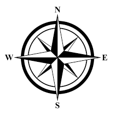

| Guías de Viaje |
Índice de destinos
|
 |
París, la ciudad de la luz, es un destino que enamora a cada paso. Desde la majestuosidad de la Torre Eiffel hasta los encantadores cafés de Montmartre, cada rincón invita a descubrir arte, historia y romance. Pasear por el Sena al atardecer, visitar el Louvre y perderse en los jardines de Luxemburgo son experiencias imprescindibles. La gastronomía francesa, con sus croissants y quesos, deleita a los paladares más exigentes. Los museos, la moda y la arquitectura convierten a París en un epicentro cultural. No te pierdas la Sainte-Chapelle, la Île de la Cité y los mercados de flores. París es ideal para recorrer a pie, disfrutando de sus bulevares y plazas. La ciudad ofrece actividades para todos: desde espectáculos en el Moulin Rouge hasta compras en los Campos Elíseos. Cada estación tiene su encanto, pero la primavera y el otoño son especialmente mágicos. París es un viaje para los sentidos y el alma.
| País | Francia |
| Moneda | Euro (€) |
| Idioma | Francés |
| Precio | Caro |
| Días recomendados | 5-7 días |
| Ropa adecuada | Casual elegante, abrigo en invierno |
| Clima | Templado, inviernos fríos y veranos suaves |
Nueva York es una ciudad que vibra las 24 horas. Sus rascacielos, como el Empire State y el One World Trade Center, dominan el horizonte. Central Park ofrece un respiro verde en medio del bullicio urbano. Broadway, con sus musicales, y los museos como el MoMA y el MET, son paradas obligatorias. Times Square deslumbra con sus luces y energía. La diversidad cultural se refleja en barrios como Chinatown, Harlem y Little Italy. La gastronomía es global: desde bagels hasta comida gourmet. El metro conecta todos los rincones, facilitando la exploración. No te pierdas la Estatua de la Libertad, el Puente de Brooklyn y las vistas desde Top of the Rock. Nueva York es ideal para compras, arte y experiencias únicas. Cada estación tiene su atractivo, pero el otoño y la Navidad son especialmente mágicos. Es un destino que inspira y sorprende a cada paso.
| País | Estados Unidos |
| Moneda | Dólar estadounidense ($) |
| Idioma | Inglés |
| Precio | Caro |
| Días recomendados | 5-7 días |
| Ropa adecuada | Casual, abrigo en invierno |
| Clima | Continental, inviernos fríos y veranos calurosos |
Roma es un viaje al pasado glorioso del Imperio Romano. El Coliseo, el Foro y el Panteón son testigos de siglos de historia. La Ciudad del Vaticano alberga la Basílica de San Pedro y la Capilla Sixtina. Las plazas, como la Navona y la de España, invitan a sentarse y disfrutar del ambiente. La gastronomía romana, con su pasta y helados, es un placer diario. Las fuentes, como la de Trevi, son iconos de la ciudad. Roma se recorre a pie, descubriendo ruinas, iglesias y mercados. El arte está presente en cada esquina, desde esculturas hasta frescos. La hospitalidad italiana y el ritmo relajado hacen de Roma un destino acogedor. Primavera y otoño son ideales para visitarla, evitando el calor del verano. Roma es historia viva y belleza eterna.
| País | Italia |
| Moneda | Euro (€) |
| Idioma | Italiano |
| Precio | Asequible |
| Días recomendados | 4-6 días |
| Ropa adecuada | Casual, calzado cómodo |
| Clima | Mediterráneo, veranos calurosos e inviernos suaves |
Tokio es una metrópolis que combina lo antiguo y lo moderno. Sus rascacielos y neones contrastan con templos como Senso-ji y jardines tradicionales. Los barrios de Shibuya y Shinjuku son centros de moda y tecnología. La gastronomía japonesa, desde sushi hasta ramen, es un deleite. Tokio ofrece parques, museos y una vida nocturna vibrante. El transporte es eficiente y seguro. Visita el mercado de pescado de Toyosu, el Palacio Imperial y la Torre de Tokio. La cultura pop, el anime y el manga tienen su epicentro aquí. Primavera y otoño son ideales para ver cerezos en flor o el follaje rojo. Tokio es hospitalidad, innovación y tradición en un solo destino.
| País | Japón |
| Moneda | Yen (¥) |
| Idioma | Japonés |
| Precio | Caro |
| Días recomendados | 5-7 días |
| Ropa adecuada | Casual, chaqueta ligera en primavera/otoño |
| Clima | Templado, veranos húmedos e inviernos frescos |
Londres es una ciudad cosmopolita y llena de historia. El Big Ben, el Palacio de Buckingham y la Torre de Londres son solo el principio. Sus museos, como el British Museum y la National Gallery, son gratuitos y de primer nivel. Los parques, como Hyde Park, invitan a relajarse. La ciudad es famosa por sus musicales, mercados y pubs tradicionales. El metro facilita el desplazamiento. Londres es multicultural, con barrios como Camden y Notting Hill. La gastronomía es variada, desde fish and chips hasta cocina internacional. El clima es variable, así que lleva paraguas. Londres es ideal para compras, cultura y paseos junto al Támesis.
| País | Reino Unido |
| Moneda | Libra esterlina (£) |
| Idioma | Inglés |
| Precio | Caro |
| Días recomendados | 4-6 días |
| Ropa adecuada | Impermeable, ropa de entretiempo |
| Clima | Templado, lluvias frecuentes |
Sídney es la puerta de entrada a Australia, famosa por su Ópera y el Harbour Bridge. Sus playas, como Bondi y Manly, son ideales para surfear y relajarse. Los parques nacionales ofrecen rutas de senderismo y vistas espectaculares. El puerto es perfecto para paseos en barco. Sídney es multicultural, con barrios vibrantes y una oferta gastronómica diversa. El clima es agradable la mayor parte del año. No te pierdas el acuario, el zoológico y los jardines botánicos. La ciudad es segura y fácil de recorrer. Sídney combina naturaleza, cultura y modernidad en un solo destino.
| País | Australia |
| Moneda | Dólar australiano (A$) |
| Idioma | Inglés |
| Precio | Caro |
| Días recomendados | 5-7 días |
| Ropa adecuada | Ropa ligera, protector solar |
| Clima | Templado, veranos cálidos e inviernos suaves |